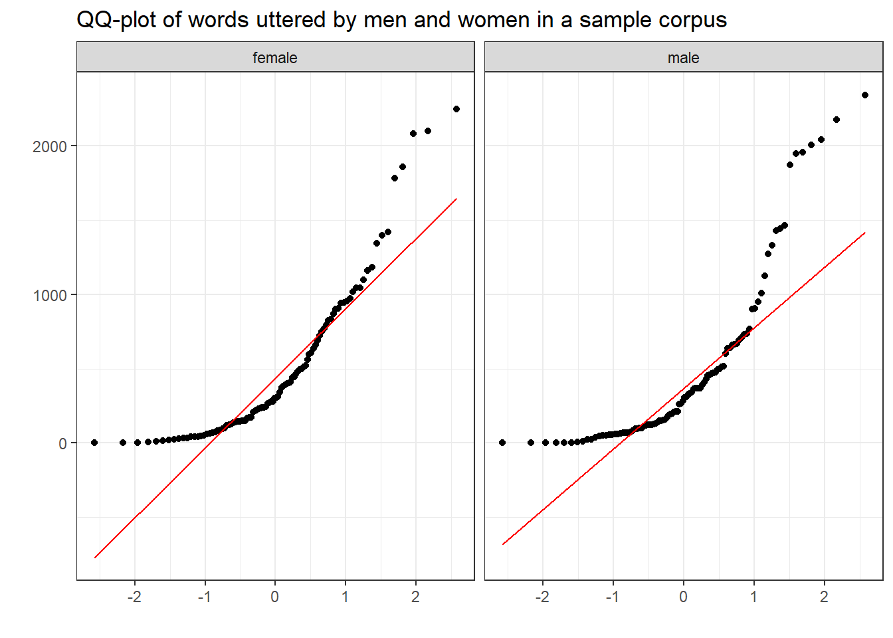

Basic Inferential Statistics using R
Martin Schweinberger
31 May, 2023

Introduction
This tutorial introduces basic inferential procedures for null-hypothesis hypothesis testing. Inferential statistics allow us to draw conclusions and make predictions about a population based on a smaller sample. They help us analyze relationships, test hypotheses, and understand the broader implications of data. Inferential statistics provide a framework for making informed inferences in humanities and linguistics research.

This tutorial is aimed at beginners and intermediate users of R with the aim of showcasing how to implement basic inferential statistical tests in R, but it also covers the conceptual underpinnings of the most commonly used tests (such as t-tests and \(\chi^2\)-tests). The aim is not to provide a fully-fledged analysis but rather to show and exemplify basic test commonly used to test hypotheses.
To be able to follow this tutorial, we suggest you check out and
familiarize yourself with the content of the following R
Basics and Data Science Basics tutorials:
- Introduction to Quantitative Reasoning
- Basic Concepts in Quantitative Research
- Descriptive Statistics
- Introduction to Data Viz
- Data Visualization with R
- Getting started with R
- Loading, saving, and generating data in R
- Handling Tables in R
Click here1 to
download the entire R Notebook for this
tutorial.

Click
here
to open an interactive Jupyter notebook that allows you to execute,
change, and edit the code as well as to upload your own data.
After preparing our R session (see below), we start the tutorial by getting to know how to test if the assumptions fro parametric tests are met - this allows us to ascertain if we should use a parametric or a non-parametric test. The next part of this tutorial then focuses on basic parametric tests such as independent and dependent t-tests while the last part of the tutorial introduces on non-parametric tests such as the \(\chi\)2 family of tests.
Preparation and session set up
This tutorial is based on R. If you have not installed R or are new to it, you will find an introduction to and more information how to use R here. For this tutorials, we need to install certain packages from an R library so that the scripts shown below are executed without errors. Before turning to the code below, please install the packages by running the code below this paragraph. If you have already installed the packages mentioned below, then you can skip ahead and ignore this section. To install the necessary packages, simply run the following code - it may take some time (between 1 and 5 minutes to install all of the libraries so you do not need to worry if it takes some time).
# install packages
install.packages("dplyr")
install.packages("ggplot2")
install.packages("tidyr")
install.packages("flextable")
install.packages("e1071")
install.packages("lawstat")
install.packages("fGarch")
install.packages("gridExtra")
install.packages("cfa")
install.packages("effectsize")
install.packages("report")
# install klippy for copy-to-clipboard button in code chunks
install.packages("remotes")
remotes::install_github("rlesur/klippy")Now, we load the packages that we will need in this tutorial.
# load packages
library(dplyr) # for data processing
library(ggplot2) # for data vis
library(tidyr) # for data transformation
library(flextable) # for creating tables
library(e1071) # for checking assumptions
library(lawstat) # for statistical tests
library(fGarch) # for statistical tests
library(gridExtra) # for plotting
library(cfa) # for stats
# activate klippy for copy-to-clipboard button
klippy::klippy()Also we load some sample data sets that we will use in this tutorial.
# data for indep. t-test
itdata <- base::readRDS(url("https://slcladal.github.io/data/itdata.rda", "rb"))
# data for paired t-test
ptdata <- base::readRDS(url("https://slcladal.github.io/data/ptdata.rda", "rb"))
# data for fishers exact test
fedata <- base::readRDS(url("https://slcladal.github.io/data/fedata.rda", "rb"))
# data for mann-whitney u-test
mwudata <- base::readRDS(url("https://slcladal.github.io/data/mwudata.rda", "rb"))
# data for wilcox test
uhmdata <- base::readRDS(url("https://slcladal.github.io/data/uhmdata.rda", "rb"))
# data for friedmann-test
frdata <- base::readRDS(url("https://slcladal.github.io/data/frdata.rda", "rb"))
# data for x2-test
x2data <- base::readRDS(url("https://slcladal.github.io/data/x2data.rda", "rb"))
# data for extensions of x2-test
x2edata <- base::readRDS(url("https://slcladal.github.io/data/x2edata.rda", "rb"))
# multi purpose data
mdata <- base::readRDS(url("https://slcladal.github.io/data/mdata.rda", "rb")) Once you have installed R, RStudio, and once you have also initiated the session by executing the code shown above, you are good to go.
1 Checking Assumptions
Before we focus on the tests themselves, we will see how to test if the errors are distributed normally, then we focus on selected parametric tests which are frequently used in linguistics. In the later part of this tutorial, we then focus on selected non-parametric tests.
Before performing the tests, we will check if the data we want to analyze are normally distributed. There are three basic ways in which can check for normality:
- visual inspection (eye-balling)
- statistical parameters
- statistical tests
None of these methods are perfect and we will discuss the strengths and weaknesses of each method below. We will begin by investigating how data can be inspected visually to see if the data approximate a normal distribution.
Visual inspection of normality
To check if data are distributed normally, we extract a sample of
words uttered my 100 men and 100 women from a sample corpus (the details
of the sample corpus are represented by the mdata data
set).
ndata <- mdata %>%
dplyr::rename(Gender = sex,
Words = word.count) %>%
dplyr::select(Gender, Words) %>%
dplyr::filter(!is.na(Words),
!is.na(Gender)) %>%
dplyr::group_by(Gender) %>%
dplyr::sample_n(100)The table below shows the first ten lines of the women sample.
Gender | Words |
|---|---|
female | 147 |
female | 33 |
female | 279 |
female | 381 |
female | 269 |
female | 123 |
female | 494 |
female | 41 |
female | 20 |
female | 302 |
We can now go ahead and visualize the data to check for normality.
Histograms
The first type of visualization we are going to use are histograms (with densities) as histograms will give us an impression about the distribution of the values. If the histograms and density functions follow a symmetric bell-shaped course, then the data are approximately normally distributed.
ggplot(ndata, aes(x = Words)) +
facet_grid(~Gender) +
geom_histogram(aes(y=..density..)) +
geom_density(aes(y=..density..), color = "red") +
theme_bw() +
labs(title = "Histograms with denisty of words uttered by men and women in a sample corpus")
The histograms shows that the words uttered by men and women in the sample corpus are non-normal (this means that the errors will also be distributed non-normally).
Quantile-Quantile Plots
Quantile-Quantile Plots (or QQ-Plots) compare the quantiles between two distributions - typically the observed distribution and an assumed distribution like the normal distribution. If the points fall on the diagonal line, then the distributions match. If the points differ from the diagonal line, then the distributions differ.
A very clear and concise explanation of how to manually create QQ-plots is shown is this StatQuest video by Josh Starmer (I can highly recommend all of his really informative, overall fantastic, and entertaining videos!) and explained in this TowardsDataScience post.
ggplot(ndata, aes(sample = Words)) +
facet_grid(~Gender) +
geom_qq() +
geom_qq_line(color = "red") +
theme_bw() +
labs(title = "QQ-plot of words uttered by men and women in a sample corpus", x = "", y = "")
The deviation of the points from the line show that the data differs substantively from a normal distribution.
Statistical measures
Another way to test if data are distributed normally is to calculate certain parameter which tell us about the skewness (whether the distribution is asymmetrical) or the kurtosis (is the data is too spiky or too flat) of the data.
Skewness
Skewed distributions are asymmetrical and they can be positively or negatively skewed. The tail of a negatively skewed distribution points towards negative values (to the left) which means that the distribution leans towards the right (towards positive values) while the tail of a positively skewed distribution points towards positive values (to the right) which means that the distribution leans towards the left (towards negative values).
Another characteristic of skewed distributions is that the mean and median of a distribution differ. If the median is greater than the mean, the distribution is negatively skewed (the long tail points towards negative values). If the median is smaller than the mean, the distribution is positively skewed (the long tail points towards positive values).
Negatively skewed
- Tail points towards negative values (to the left)
- Median is greater than the mean
Positively skewed
- Tail points towards positive values (to the right)
- Median is lower than the mean

As we need to test skewness within groups, we start by extracting the word counts of only women and then test if the distribution of the women’s word counts are normal.
# extract word counts for one group
words_women <- ndata %>%
dplyr::filter(Gender == "female") %>%
dplyr::pull(Words)
# inspect
head(words_women)## [1] 147 33 279 381 269 123To see if a distribution is skewed, we can use the
summary function to check if the mean and the median
differ.
summary(words_women)## Min. 1st Qu. Median Mean 3rd Qu. Max.
## 0.0 121.8 305.0 490.3 754.0 2244.0In our example, the mean is larger than the median which suggests that the data are positively skewed.
We apply the skewness function from the
e1071 package to the sample scores to calculated skewness.
The skewness function allows to calculate skewness in three
different ways:
Type 1 (This is the typical definition used in many older textbooks): \[\begin{equation} g_1 = m_3 / m_2^{(3/2)}. \end{equation}\]
Type 2 (Used in SAS and SPSS): \[\begin{equation} G_1 = g_1 * sqrt(n(n-1)) / (n-2) \end{equation}\]
Type 3 (Used in MINITAB and BMDP): \[\begin{equation} b_1 = m_3 / s^3 = g_1 ((n-1)/n)^{(3/2)} \end{equation}\]
All three formulas have in common that the more negative values are,
the more strongly positively skewed are the data (distribution leans to
the left) and the more positive the values are, the more strongly
negatively skewed are the data (distribution leans to the right). Here
we use the second formula (by setting type = 2) that is
also used in SPSS.
skewness(words_women, type = 2) ## [1] 1.540422If the reported skewness value is negative, then the distribution is positively skewed. If the value is positive, then the distribution is negatively skewed. If the value is lower than -1 or greater than +1, then the distribution can be assumed to be substantively skewed (Hair et al. 2017).
Kurtosis
Another way in which distributions can differ from the normal distribution relates to the thickness of the tails and the spikiness of the distribution. If distributions are bell-shaped like the normal distribution, they are called mesokurtic. If distributions are symmetrical but they are more spiky than the normal distribution, they are called leptokurtic. If symmetrical distributions are flatter and have bigger tails than the normal distribution, the distributions are called platykurtic.

To show how we can calculate kurtosis (or if a distribution suffers
from kurtosis), we apply the kurtosis function from the
e1071 package to the sample scores we generated above /when
we calculated skewness).
kurtosis(words_women) ## [1] 1.959239As the kurtosis value is positive, the distribution is leptokurtic (if it were negative, the distribution would be platykurtic). As a rule of thumb, values greater than +1 indicate that the distribution is too peaked while values lower than –1 indicate that the distribution is substantively platykurtic (Hair et al. 2017, pp61).
The kurtosis score can thus be interpreted as follows:
A values of 0 means that the distribution is perfectly mesokurtic with Values between -0.5 and 0.5 suggesting that the distribution is approximately mesokurtic
Values between -0.5 and -1 mean that the distribution is moderately platykurtic with values smaller than -1 indicating that the distribution is platykurtic.
Values between 0.5 and 1 mean that the distribution is moderately leptokurtic with values greater than 1 indicating that the distribution is leptokurtic
Statistical test of assumptions
The two most common tests to check assumptions are the Shapiro-Wilk test, which tests if the data differ significantly from a normal distribution, and the Levene’s test which tests if the variances are of two groups are approximately equal.
Shapiro-Wilk test
The Shapiro-Wilk test (cf. Shapiro and Wilk 1965) can be used to check if the data differs significantly from a normal distribution (within groups). However, it has been shown to be too lenient when dealing with small sample sizes (below 50 to 100 cases per variable level), but too strict when dealing with larger sample sizes (500 or more cases per variable level). A such, the Shapiro-Wilk test should only be used in combination with visual inspection on the data.
In this example, we will only test if the words uttered by women
differ significantly from a normal distribution (we use the
words_women vector created above). Once we have a a vector
of word counts of one group only (in this case the women’s word counts),
we can continue by performing the Shapiro-Wilk test.
shapiro.test(words_women)##
## Shapiro-Wilk normality test
##
## data: words_women
## W = 0.83001, p-value = 2.315e-09If the p-value of the Shapiro-Wilk test is greater than .05, the data do not support the hypothesis that they differ from normality. In other words, if the p-value is greater than .05, we can assume that the data are approximately normally distributed.
The output of the Shapiro-Wilk test shown above thus indicates that
our data differs significantly from normal (W = 0.7925, p < .001***).
For more information about the implementation of the Shapiro-Wilk test
in R, type ?shapiro.test into the console.
Levene’s test
The Levene’s test (cf. Levene 1961) evaluates if the variances of two groups is approximately equal - this is referred to as homoskedasticity. This is important, because unequal variances - or heteroskedasticity - strongly suggest that there is another factor, a confound, that is not included in the model but that significantly affects the dependent variable which renders results of an analysis unreliable.
To implement a Levene’s test in R, we need to install and load
thelawstat package.
levene.test(mdata$word.count, mdata$sex)##
## Modified robust Brown-Forsythe Levene-type test based on the absolute
## deviations from the median
##
## data: mdata$word.count
## Test Statistic = 0.0050084, p-value = 0.9436If the p-values of the Levene’s test is greater than .05, we can
assume that the variances are approximately equal. Thus, the output of
the Levene’s test shown above thus indicates that the variances of men
and women in our data are approximately equal (W = 0.005, p = .9436).
For more information about the implementation of the Levene’s test in R,
type ?levene.test into the console.
2 Selected Parametric tests
So-called parametric tests require the data (or the errors of the dependent variable) within groups to be distributed normally (i.e., the errors need to approximate a normal distribution) and that the data within groups are independent. This is so, because parametric tests rely on assumptions regarding the parameters of the population (thus the name). The within groups-part in the first sentence above is important here, because we expect the data between groups to be non-normal (typically bi-model, i.e., with two peaks). In contrast, tests that do not require normal data are referred to as non-parametric tests - as they do not rely on assumptions regarding the parameters of the population - and we will have a look at selected non-parametric tests after this section.
Student’s t-test
There are two basic types of t-tests: the dependent or paired t-test and the independent t-test. Paired t-test are used when the data points are not independent, for example, because they come form the same subjects in a pre-post test design. In contrast, Independent t-tests are used when the data points are independent and come from two different groups (e.g., from learners and native speakers or from men and women).
The assumptions of the Student’s t-test are that
- the dependent variable is a continuous, numeric variable;
- the independent variable is a nominal variable (two levels / groups)
- the variances within each group are approximately normal;
- the errors within each group are approximately normal (this implies that the distributions of the scores of each group are approximately normal).
If the variances are not normal, then this indicates that another important variable is confounding the results. In such cases, you should go back to the data and check what other variable could cause the unequal variances. If you decide to proceed with the analysis, you can switch to a Welch t-test which does not assume equal variances within each group.
Paired t-test
Paired t-tests take into account that the scores (or values) come from the same individuals in two conditions (e.g. before and after a treatment).There are two equations for the paired t-test that are used.
\[\begin{equation} t = \frac{\sum D}{\sqrt{\frac{N \sum D^2 - (\sum D)^2}{N-1}}} \end{equation}\]
or
\[\begin{equation} t = \frac{\bar D}{\frac{s_D}{\sqrt{N}}} \end{equation}\]
To show how a paired t-tests works, we will test if a treatment (a teaching method) reduces the number of spelling errors in a long essay of 6 students. In a first step, we generate some data representing the errors in two essays of the same length written before and after the teaching method was used for 8 weeks.
Pretest <- c(78, 65, 71, 68, 76, 59)
Posttest <- c(71, 62, 70, 60, 66, 48)
ptd <- data.frame(Pretest, Posttest)The data look like as shown in the table below.
Pretest | Posttest |
|---|---|
78 | 71 |
65 | 62 |
71 | 70 |
68 | 60 |
76 | 66 |
59 | 48 |
To perform a paired t-test in R, we use the t.test
function and specify the argument paired as TRUE.
t.test(ptd$Pretest,
ptd$Posttest,
paired=TRUE,
conf.level=0.95)##
## Paired t-test
##
## data: ptd$Pretest and ptd$Posttest
## t = 4.1523, df = 5, p-value = 0.00889
## alternative hypothesis: true mean difference is not equal to 0
## 95 percent confidence interval:
## 2.539479 10.793854
## sample estimates:
## mean difference
## 6.666667In addition to testing if the groups differ significantly, we also
want to calculate the effect size of the difference. We can use the
effectsize package to extract Cohen’s \(d\) which is the standard effect size
measure for t-tests.
effectsize::cohens_d(x = ptd$Pretest,
y = ptd$Posttest,
paired = TRUE)## Cohen's d | 95% CI
## ------------------------
## 1.70 | [0.37, 2.96]To check if the effect is small or big - that is if a Cohen’s \(d\) value can be interpreted as being small or big, we can use the following overview.
EffectSize | d | Reference |
|---|---|---|
Very small | 0.01 | Sawilowsky (2009) |
Small | 0.20 | Cohen (1988) |
Medium | 0.50 | Cohen (1988) |
Large | 0.80 | Cohen (1988) |
Very large | 1.20 | Sawilowsky (2009) |
Huge | 2.00 | Sawilowsky (2009) |
The classification combines Sawilowsky (2009) and
Cohen (1988). The analysis can be summarized
using the reports package (Makowski et al. 2021)
as follows.
report::report(t.test(ptd$Pretest,ptd$Posttest, paired=TRUE, conf.level=0.95))## Effect sizes were labelled following Cohen's (1988) recommendations.
##
## The Paired t-test testing the difference between ptd$Pretest and ptd$Posttest
## (mean difference = 6.67) suggests that the effect is positive, statistically
## significant, and large (difference = 6.67, 95% CI [2.54, 10.79], t(5) = 4.15, p
## = 0.009; Cohen's d = 1.70, 95% CI [0.37, 2.96])We can use this output to write up a final report:
A paired t-test test was applied to the data and it confirmed that the number of spelling errors after the 8 weeks of using the new teaching method significantly decreased (t5: 4.1523, p = .009**). The treatment had a very large, statistically significant, positive effect (Cohen’s \(d\) = 1.70 [CIs: 0.41, 3.25]) (cf. Sawilowsky 2009).
Independent t-tests
Independent t-tests are used very widely and they determine if the means of two groups are significantly different. As such, t-tests are used when we have a normally distributed (or parametric), numeric dependent variable and a nominal predictor variable.
\[\begin{equation} t = \frac{\bar X_1 - \bar X_2}{\sqrt{\frac{s^2_p}{N_1} + \frac{s^2_p}{N_2}}} \end{equation}\]
where
\[\begin{equation} s^2_p = \frac{(N_1 - 1)s^2_1 + (N_2 - 1)s^2_2}{N_1 + N_2 - 2} \end{equation}\]
We now load some data that we can apply a t-test to. The data represents scores on a proficiency test of native speakers and learners of English. We want to use a t-test to determine if the native speakers and learners differ in their proficiency.
# load data
tdata <- base::readRDS(url("https://slcladal.github.io/data/d03.rda", "rb")) %>%
dplyr::rename(NativeSpeakers = 1,
Learners = 2) %>%
tidyr::gather(Group, Score, NativeSpeakers:Learners) %>%
dplyr::mutate(Group = factor(Group))Group | Score |
|---|---|
NativeSpeakers | 6 |
NativeSpeakers | 65 |
NativeSpeakers | 12 |
NativeSpeakers | 56 |
NativeSpeakers | 45 |
NativeSpeakers | 84 |
NativeSpeakers | 38 |
NativeSpeakers | 46 |
NativeSpeakers | 64 |
NativeSpeakers | 24 |
We now apply an independent t-test to the data.
t.test(Score ~ Group,
var.equal = T,
data = tdata)##
## Two Sample t-test
##
## data: Score by Group
## t = -0.054589, df = 18, p-value = 0.9571
## alternative hypothesis: true difference in means between group Learners and group NativeSpeakers is not equal to 0
## 95 percent confidence interval:
## -19.74317 18.74317
## sample estimates:
## mean in group Learners mean in group NativeSpeakers
## 43.5 44.0As the p-value is higher than .05, we cannot reject the H-0- and we
thus have to conclude that our evidence does not suffice to say that
learners and Native Speakers differ in their proficiency. However, we
still extract the effect size, again using Cohen’s \(d\). In contract to the extraction of the
effect size for paired t-tests, however, we will set the argument
paired to FALSE (in fact, we could simply
leave it out as the paired = FALSE is the default).
effectsize::cohens_d(tdata$Score ~ tdata$Group,
paired = FALSE)## Cohen's d | 95% CI
## -------------------------
## -0.02 | [-0.90, 0.85]
##
## - Estimated using pooled SD.The analysis can be summarized using the reports package
(Makowski et al. 2021) as follows.
report::report(t.test(Score ~ Group, var.equal = T, data = tdata))## Effect sizes were labelled following Cohen's (1988) recommendations.
##
## The Two Sample t-test testing the difference of Score by Group (mean in group
## Learners = 43.50, mean in group NativeSpeakers = 44.00) suggests that the
## effect is negative, statistically not significant, and very small (difference =
## -0.50, 95% CI [-19.74, 18.74], t(18) = -0.05, p = 0.957; Cohen's d = -0.03, 95%
## CI [-0.95, 0.90])We can use this output to write up a final report:
An independent t-test test was applied to the data and it reported that the scores between the two groups did not differ significantly (t18: -0.0546, p = .9571). In addition to not differing significantly, the effect size of the difference between the groups was also very small (Cohen’s \(d\) = -0.03 [CIs: -0.95, 0.90]) (cf. Sawilowsky 2009).
3 Simple Linear Regression
Simple linear regression is a very useful and widely used test to determine if predictors correlate with a numeric dependent variable. (Simple) Linear regression outperforms alternatives such as t-tests because it not only determines significance and provides effect sizes but but it also provides model fit statistics (for example, R2) and allows to extract model diagnostics. For an elaborate tutorial on (simple) linear regression and how to implement a linear regression in R, have a look at this tutorial - we cannot cover it here because we feel that it is too long and requires a separate section.
4 Selected Non-Parametric Tests
Non-parametric tests are used when we the data is non-parametric. This is the case if
- the dependent variable does not represent a continuous
interval-scaled or ratio-scaled variable
- errors (also called residuals) which represent the difference
between the expected or predicted values and the observed values do not
approximate a normal distribution
- the dependent variable is ordinal (it represents ranks).
Non-parametric tests are frequently used when numeric variables have to be transformed into ordinal variables because the numeric variable is distributed non-normally (well, actually, it is not the distribution of the dependent variable that matters but the distribution of the errors). Thus, when the dependent variable is non-normal, it is advisable to apply tests that are designed to handle ordinal data. In the following, we will therefore briefly touch on bi-variate tests that can handle ordinal dependent variables.
Fisher’s Exact Test
Fisher’s Exact test is very useful because it does not rely on distributional assumptions relying on normality. Instead, Fisher’s Exact Test calculates the probabilities of all possible outcomes and uses these to determine significance. To understand how a Fisher’s Exact test, we will use a very simple example.
Imagine you are interested in adjective modification and you want to find out if very and truly differ in their collocational preferences. So you extract all instances of cool, all instances of very, and all instances of truly from a corpus. Now that you have gathered this data, you want to test if truly and very differ with respect to their preference to co-occur with cool. Accordingly, you tabulate the results and get the following table.
Adverb | with cool | with other adjectives |
|---|---|---|
truly | 5 | 40 |
very | 17 | 41 |
To perform a Fisher’s Exact test, we first create a table with these
results and then use the fisher.test function to perform
the Fisher’s Exact Test to see if very and truly
differ in their preference to co-occur with cool (as shown
below). The null hypothesis is that there is no difference between the
adverbs.
# create table
coolmx <- matrix(
c(5, 17, 40, 41),
nrow = 2, # number of rows of the table
# def. dimension names
dimnames = list(
Adverbs = c("truly", "very"),
Adjectives = c("cool", "other adjective"))
)
# perform test
fisher.test(coolmx)##
## Fisher's Exact Test for Count Data
##
## data: coolmx
## p-value = 0.03024
## alternative hypothesis: true odds ratio is not equal to 1
## 95 percent confidence interval:
## 0.08015294 0.96759831
## sample estimates:
## odds ratio
## 0.3048159The results of the Fisher’s Exact test show that the p-value is lower than .05, which means we reject the null hypothesis, and we are therefore justified in assuming that very and truly differ in their collocational preferences to co-occur with cool.
The analysis can be summarized as follows:
A Fisher’s Exact test was applied to the data to determine if there was a significant difference in the modification of adjective cool. Specifically, we tested if the preference of cool to be modified by very and by truly differed significantly. The results of the Fisher’s Exact test confirmed that there was a statistically significant difference in the modification preference of cool(p: .030*). However, the effect size of the preference is small (Odds Ratio: 0.305).
Mann-Whitney U-Test
It is actually quite common that numeric depend variables need to be transformed or converted into ranks, i.e. ordinal variables, because the distribution of residuals does not allow the application of parametric tests such as t-tests or linear regression. In such cases, as we are dealing with rank (ordinal) data, the application of a chi-square test is unwarranted and we need to use another test. There are different alternatives depending on whether the data are paired (coming from the same individuals) or if all observations are independent.
The non-parametric alternative for independent t-tests, i.e. for data where we are dealing with two separate groups and a numeric dependent variable that violates parametric assumptions (or an ordinal dependent variable), is the Mann-Whitney U-test. In contrast, if the groups under investigation represent identical participants that are tested under two conditions, the appropriate alternative is a Wilcoxon Signed Rank test (which is thus the alternative for paired t-test).
Imagine we wanted to determine if two language families differed with respect to the size of their phoneme inventories. You have already ranked the inventory sizes and would now like to now if language family correlates with inventory size. As such, we are dealing with two independent groups and we want to implement a non-parametric alternative of a t-test. To answer this question, you create the table shown below.
# create table
Rank <- c(1,3,5,6,8,9,10,11,17,19, 2,4,7,12,13,14,15,16,18,20)
LanguageFamily <- c(rep("Kovati", 10), rep("Urudi", 10))
lftb <- data.frame(LanguageFamily, Rank)LanguageFamily | Rank |
|---|---|
Kovati | 1 |
Kovati | 3 |
Kovati | 5 |
Kovati | 6 |
Kovati | 8 |
Kovati | 9 |
Kovati | 10 |
Kovati | 11 |
Kovati | 17 |
Kovati | 19 |
Urudi | 2 |
Urudi | 4 |
Urudi | 7 |
Urudi | 12 |
Urudi | 13 |
Urudi | 14 |
Urudi | 15 |
Urudi | 16 |
Urudi | 18 |
Urudi | 20 |
We will also briefly inspect the data visually using a box plot.
ggplot(lftb, aes(x = LanguageFamily, y = Rank, fill = LanguageFamily)) +
geom_boxplot() +
scale_fill_manual(values = c("orange", "darkgrey")) +
theme_bw() +
theme(legend.position = "none")
To use the Mann-Whitney U test, the dependent variable (Rank) must be ordinal and independent variable (Group) must be a binary factor. We briefly check this by inspecting the structure of the data.
# inspect structure
str(lftb)## 'data.frame': 20 obs. of 2 variables:
## $ LanguageFamily: chr "Kovati" "Kovati" "Kovati" "Kovati" ...
## $ Rank : num 1 3 5 6 8 9 10 11 17 19 ...As the variables are what we need them to be, we can now perform the Mann-Whitney U test on the table. The null hypothesis is that there is no difference between the 2 groups.
# perform test
wilcox.test(lftb$Rank ~ lftb$LanguageFamily) ##
## Wilcoxon rank sum exact test
##
## data: lftb$Rank by lftb$LanguageFamily
## W = 34, p-value = 0.2475
## alternative hypothesis: true location shift is not equal to 0Since the p-value is greater than 0.05, we fail to reject the null hypothesis. The results of the Mann-Whitney U test tell us that the two language families do not differ significantly with respect to their phoneme inventory size.
The analysis can be summarized using the reports package
(Makowski et al. 2021) as follows.
report::report(wilcox.test(lftb$Rank ~ lftb$LanguageFamily))## Effect sizes were labelled following Funder's (2019) recommendations.
##
## The Wilcoxon rank sum exact test testing the difference in ranks between
## lftb$Rank and lftb$LanguageFamily suggests that the effect is negative,
## statistically not significant, and large (W = 34.00, p = 0.247; r (rank
## biserial) = -0.32, 95% CI [-0.69, 0.18])We can use this output to write up a final report:
The Wilcoxon rank sum exact test suggests that there is no statistically significant relationship between the size of phoneme inventories and being member of selected language families. Despite being statistically insignificant, the effect may be large (W = 34.00, p = 0.247; r (rank biserial) = -0.32, 95% CI [-0.69, 0.18]).
Mann-Whitney U tests with continuity correction
The Mann-Whitney U test can also be used with continuity correction. A continuity correction is necessary when both variables represent numeric values that are non-normal. In the following example, we want to test if the reaction time for identifying a word as real is correlated with its token frequency.
For this example, we generate data is deliberately non-normal.
Frequency | NormalizedReaction | Reaction |
|---|---|---|
20,000 | 1,764.8 | 66 |
10,000 | 1,463.8 | 20 |
6,667 | 3,529.0 | 60 |
5,000 | 2,116.7 | 208 |
4,000 | 1,855.9 | 380 |
3,333 | 2,555.6 | 258 |
2,857 | 1,681.2 | 448 |
2,500 | 1,694.1 | 768 |
2,222 | 2,487.7 | 135 |
2,000 | 1,299.3 | 530 |
When we plot the data, we see that both the frequency of words (Frequency) and the reaction times that it took subjects to recognize the token as a word (Reaction) are non-normal (in this case, the distributions are negative skewed).

Both variables are negatively skewed (non-normally distributed) but
we can use the wilcox.test function to perform the
Mann-Whitney U test with continuity correction which takes the skewness
into account. The null hypothesis is that there is no difference between
the 2 groups. Although the output states that the test that was
performed is a Wilcoxon rank sum test with continuity
correction, we have actually performed a Mann-Whitney U test - this
is because the nomenclature for the tests is not unanimous.
# perform test
wilcox.test(wxdata$Reaction, wxdata$Frequency) ##
## Wilcoxon rank sum test with continuity correction
##
## data: wxdata$Reaction and wxdata$Frequency
## W = 7611, p-value = 1.788e-10
## alternative hypothesis: true location shift is not equal to 0Again, we use the reports package (Makowski et
al. 2021) to summarize the analysis.
report::report(wilcox.test(wxdata$Reaction, wxdata$Frequency))## Effect sizes were labelled following Funder's (2019) recommendations.
##
## The Wilcoxon rank sum test with continuity correction testing the difference in
## ranks between wxdata$Reaction and wxdata$Frequency suggests that the effect is
## positive, statistically significant, and very large (W = 7611.00, p < .001; r
## (rank biserial) = 0.52, 95% CI [0.40, 0.63])We can use this output to write up a final report:
The Wilcoxon rank sum exact test suggests that there is a strong, positive, statistically significant relationship between the reaction time for identifying a word as real and its token frequency (W = 7613.50, p < .001; r (rank biserial) = 0.52, 95% CI [0.40, 0.63]).
Wilcoxon rank sum test
The Wilcoxon rank sum test is the non-parametric alternative to a
paired or dependent t-test. Thus, a Wilcoxon rank sum test is used when
the data represent the same individuals that were tested under two
condition. To tell R that we are dealing with paired data, we have to
set the argument paired to TRUE while we can
still use the wilcox.test function (as we did before when
using the Mann-Whitney U test which is applied to independent
groups).
In this example, the same individuals had to read tongue twisters when they were sober and when they were intoxicated. A Wilcoxon signed rank test with continuity correction is used to test if the number of errors that occur when reading tongue twisters correlates with being sober/intoxicated. Again, we create fictitious data.
# create data
sober <- sample(0:9, 15, replace = T)
intoxicated <- sample(3:12, 15, replace = T)
# tabulate data
intoxtb <- data.frame(sober, intoxicated) sober | intoxicated |
|---|---|
8 | 4 |
4 | 7 |
9 | 4 |
5 | 3 |
2 | 12 |
9 | 11 |
4 | 12 |
6 | 4 |
5 | 7 |
9 | 5 |
6 | 9 |
5 | 7 |
4 | 9 |
1 | 10 |
5 | 8 |
Now, we briefly plot the data.
intoxtb2 <- data.frame(c(rep("sober", nrow(intoxtb)),
rep("intoxicated", nrow(intoxtb))),
c(intoxtb$sober, intoxtb$intoxicated)) %>%
dplyr::rename(State = 1,
Errors = 2)
ggplot(intoxtb2, aes(State, Errors)) +
geom_boxplot(fill = c("orange", "darkgrey"), width=0.5) +
labs(y = "Number of errors", x = "State") +
theme_bw()
The boxes indicate a significant difference. Finally, we perform the Wilcoxon signed rank test with continuity correction. The null hypothesis is that the two groups are the same.
# perform test
wilcox.test(intoxtb$intoxicated, intoxtb$sober, paired=T) ##
## Wilcoxon signed rank test with continuity correction
##
## data: intoxtb$intoxicated and intoxtb$sober
## V = 83.5, p-value = 0.1891
## alternative hypothesis: true location shift is not equal to 0The p-value is lower than 0.05 (rejecting the null hypothesis) which means that the number of errors when reading tongue twisters is affected by one’s state (sober/intoxicated) - at least in this fictitious example.
Again, we use the reports package (Makowski et
al. 2021) to summarize the analysis.
report::report(wilcox.test(intoxtb$intoxicated, intoxtb$sober, paired=T) )## Effect sizes were labelled following Funder's (2019) recommendations.
##
## The Wilcoxon signed rank test with continuity correction testing the difference
## in ranks between intoxtb$intoxicated and intoxtb$sober suggests that the effect
## is positive, statistically not significant, and large (W = 83.50, p = 0.189; r
## (rank biserial) = 0.39, 95% CI [-0.16, 0.76])We can use this output to write up a final report:
The Wilcoxon rank sum exact test suggests that there is a very large, positive, statistically significant relationship between the number of errors produced in tongue twisters and being intoxicated (W = 6.50, p = 0.003; r (rank biserial) = -0.89, 95% CI [-0.97, -0.64]).
Kruskal-Wallis Rank Sum Test
The Kruskal-Wallis rank sum test is a type of ANOVA (Analysis of Variance). For this reason, the Kruskal Wallis Test is also referred to as a one-way Anova by ranks which can handle numeric and ordinal data.
In the example below, uhm represents the number of filled pauses in a short 5 minute interview while speaker represents whether the speaker was a native speaker or a learner of English. As before, the data is generated and thus artificial.
# create data
uhms <- c(15, 13, 10, 8, 37, 23, 31, 52, 11, 17)
Speaker <- c(rep("Learner", 5), rep("NativeSpeaker", 5))
# create table
uhmtb <- data.frame(Speaker, uhms)Speaker | uhms |
|---|---|
Learner | 15 |
Learner | 13 |
Learner | 10 |
Learner | 8 |
Learner | 37 |
NativeSpeaker | 23 |
NativeSpeaker | 31 |
NativeSpeaker | 52 |
NativeSpeaker | 11 |
NativeSpeaker | 17 |
Now, we briefly plot the data.
ggplot(uhmtb, aes(Speaker, uhms)) +
geom_boxplot(fill = c("orange", "darkgrey")) +
theme_bw() +
labs(x = "Speaker type", y = "Errors")Now, we test for statistical significance. The null hypothesis is that there is no difference between the groups.
kruskal.test(uhmtb$Speaker~uhmtb$uhms) ##
## Kruskal-Wallis rank sum test
##
## data: uhmtb$Speaker by uhmtb$uhms
## Kruskal-Wallis chi-squared = 9, df = 9, p-value = 0.4373The p-value is greater than 0.05, therefore we fail to reject the null hypothesis. The Kruskal-Wallis test does not report a significant difference for the number of uhms produced by native speakers and learners of English in the fictitious data.
The Friedman Rank Sum Test
The Friedman rank sum test is also called a randomized block design and it is used when the correlation between a numeric dependent variable, a grouping factor and a blocking factor is tested. The Friedman rank sum test assumes that each combination of the grouping factor (Gender) and the blocking factor (Age) occur only once. Thus, imagine that the values of uhms represent the means of the respective groups.
# create data
uhms <- c(7.2, 9.1, 14.6, 13.8)
Gender <- c("Female", "Male", "Female", "Male")
Age <- c("Young", "Young", "Old", "Old")
# create table
uhmtb2 <- data.frame(Gender, Age, uhms)Gender | Age | uhms |
|---|---|---|
Female | Young | 7.2 |
Male | Young | 9.1 |
Female | Old | 14.6 |
Male | Old | 13.8 |
We now perform the Friedman rank sum test.
friedman.test(uhms ~ Age | Gender, data = uhmtb2)##
## Friedman rank sum test
##
## data: uhms and Age and Gender
## Friedman chi-squared = 2, df = 1, p-value = 0.1573In our example, age does not affect the use of filled pauses even if we control for gender as the p-value is higher than .05.
(Pearsons’s) Chi-Square Test
One of the most frequently used statistical test in linguistics is the \(\chi\)2 test (or Pearsons’s chi-square test, chi-squared test, or chi-square test). We will use a simple, practical example to explore how this test works. In this example, we will test whether speakers of American English (AmE) and speakers of British English (BrE) differ in their use of the near-synonyms sort of and kind of as in “He’s sort of stupid” and “He’s kind of stupid”. As a first step, we formulate the hypothesis that we want to test (H1) and its null hypothesis (H0). The alternative- or test hypothesis reads:
H1: Speakers of AmE and BrE differ with respect to their preference for sort of and kind of.
while the Null Hypothesis (H0) states
H0: Speakers of AmE and BrE do not differ with respect to their preference for sort of and kind of.
The H0 claims the non-existence of something (which is the more conservative position) and in our example the non-existence of a correlation between variety of English and the use of sort of and kind of. The question now arises what has to be the case in order to reject the H0 in favor of the H1.
To answer this question, we require information about the probability of error, i.e. the probability that the H0 does indeed hold for the entire population. Before performing the chi-square test, we follow the convention that the required significance level is 5 percent. In other words, we will reject the H0 if the likelihood for the H\(_{0}\) being true is less than 5 percent given the distribution of the data. In that case, i.e. in case that the likelihood for the H0 being true is less than 5 percent, we consider the result of the chi-square test as statistically significant. This means that the observed distribution makes it very unlikely that there is no correlation between the variety of English and the use of sort of and kind of.
Let us now assume that we have performed a search for sort of and kind of in two corpora representing American and British English and that we have obtained the following frequencies:
Hedge | BrE | AmE |
|---|---|---|
kindof | 181 | 655 |
sortof | 177 | 67 |
In a first step, we now have to calculate the row and column sums of our table.
Hedge | BrE | AmE | Total |
|---|---|---|---|
kindof | 181 | 655 | 836 |
sortof | 177 | 67 | 244 |
Total | 358 | 722 | 1,080 |
Next, we calculate, the values that would have expected if there was no correlation between variety of English and the use of sort of and kind of. In order to get these expected frequencies, we apply the equation below to all cells in our table.
\[\begin{equation} \frac{Column total*Row total}{Overall total} \end{equation}\]
In our example this means that for the cell with [+]BrE
[+]kindof we get:
\[\begin{equation} \frac{836*358}{1080} = \frac{299288}{1080} = 277.1185 \end{equation}\]
For the entire table this means we get the following expected values:
Hedge | BrE | AmE | Total |
|---|---|---|---|
kindof | 277.11850 | 558.8815 | 836 |
sortof | 80.88148 | 163.1185 | 244 |
Total | 358.00000 | 722.0000 | 1,080 |
In a next step, we calculate the contribution of each cell to the overall \(\chi\)2 value (\(\chi\)2 contribution). To get \(\chi\)2 contribution for each cell, we apply the equation below to each cell.
\[\begin{equation} \frac{(observed – expected)^{2}}{expected} \end{equation}\]
In our example this means that for the cell with [+]BrE
[+]kindof we get:
\[\begin{equation} \frac{(181 – 277.1185)^{2}}{277.1185} = \frac{-96.1185^{2}}{277.1185} = \frac{9238.766}{277.1185} = 33.33868 \end{equation}\]
For the entire table this means we get the following \(\chi^{2}\) values:
Hedge | BrE | AmE | Total |
|---|---|---|---|
kindof | 33.33869 | 16.53082 | 49.86951 |
sortof | 114.22602 | 56.63839 | 170.86440 |
Total | 147.56470 | 73.16921 | 220.73390 |
The sum of \(\chi\)2 contributions in our example is 220.7339. To see if this value is statistically significant, we need to calculate the degrees of freedom because the \(\chi\) distribution differs across degrees of freedom. Degrees of freedom are calculated according to the equation below.
\[\begin{equation} DF = (rows -1) * (columns – 1) = (2-1) * (2-1) = 1 * 1 = 1 \end{equation}\]
In a last step, we check whether the \(\chi\)2 value that we have calculated is higher than a critical value (in which case the correlation in our table is significant). Degrees of freedom are relevant here because the critical values are dependent upon the degrees of freedom: the more degrees of freedom, the higher the critical value, i.e. the harder it is to breach the level of significance.
Since there is only 1 degree of freedom in our case, we need to consider only the first column in the table of critical values below.
DF | p<.05 | p<.01 | p<.001 |
|---|---|---|---|
1 | 3.84 | 6.64 | 10.83 |
2 | 5.99 | 9.21 | 13.82 |
3 | 7.82 | 11.35 | 16.27 |
4 | 9.49 | 13.28 | 18.47 |
5 | 11.07 | 15.09 | 20.52 |
Since the \(\chi\)2 value that we have calculated is much higher than the critical value provided for p<.05, we can reject the H0 and may now claim that speakers of AmE and BrE differ with respect to their preference for sort of and kind of.
Before we summarize the results, we will calculate the effect size which is a measure for how strong the correlations are.
Effect Sizes in Chi-Square
Effect sizes are important because they correlations may be highly significant but the effect between variables can be extremely weak. The effect size is therefore a measure how strong the correlation or the explanatory and predictive power between variables is.
The effect size measure for \(\chi\)2 tests can be either the \(\phi\)-coefficient (phi-coefficient) or Cramer’s \(\phi\) (Cramer’s phi). The \(\phi\)-coefficient is used when dealing with 2x2 tables while Cramer’s \(\phi\) is used when dealing with tables with more than 4 cells. The \(\phi\) coefficient can be calculated by using the equation below (N = overall sample size).
\[\begin{equation} \phi = \sqrt{\frac{\chi^{2}}{N}} \end{equation}\]
In our case, this means:
\[\begin{equation} \phi = \sqrt{\frac{220.7339}{1080}} = \sqrt{0.2043832} = 0.4520876 \end{equation}\]
The \(\phi\) coefficient varies between 0 (no effect) and 1 (perfect correlation). For the division into weak, moderate and strong effects one can follow the division for \(\omega\) (small omega), so that with values beginning with .1 represent weak, values between 0.3 and .5 represent moderate and values above .5 represent strong effects (Bühner and Ziegler 2009, 266). So, in this example we are dealing with a medium-sized effect/correlation.
Chi-Square in R
Before we summarize the results, we will see how to perform a chi-square test in R. In addition to what we have done above, we will also visualize the data. To begin with, we will have a look at the data set (which is the same data we have used above).
# inspect data
chidata %>%
as.data.frame() %>%
tibble::rownames_to_column("Hedge") %>%
flextable() %>%
flextable::set_table_properties(width = .75, layout = "autofit") %>%
flextable::theme_zebra() %>%
flextable::fontsize(size = 12) %>%
flextable::fontsize(size = 12, part = "header") %>%
flextable::align_text_col(align = "center") %>%
flextable::border_outer()Hedge | BrE | AmE |
|---|---|---|
kindof | 181 | 655 |
sortof | 177 | 67 |
We will now visualize the data with an association. Bars above the dashed line indicate that a feature combination occurs more frequently than expected by chance. The width of the bars indicates the frequency of the feature combination.

The fact that the bars are distributed complimentary (top left red and below bar; top right black above bar; bottom left black above bar; bottom right red below bar) indicates that the use of sort of and kind of differs across AmE and BrE. We will check whether the mosaic plot confirms this impression.
mosaicplot(chidata, shade = TRUE, type = "pearson", main = "") # mosaic plot
The color contrasts in the mosaic plot substantiate the impression that the two varieties of English differ significantly. To ascertain whether the differences are statistically significant, we can now apply the chi-square test.
# perform chi square test without Yate's correction
chisq.test(chidata, corr = F) ##
## Pearson's Chi-squared test
##
## data: chidata
## X-squared = 220.73, df = 1, p-value < 2.2e-16The results reported by R are identical to the results
we derived by hand and confirm that BrE and AmE differ significantly in
their use of sort of and kind of.
NOTE
When conducting a \(\chi\)2 test of independence and
in order to interpret the Pearson’s \(\chi\)2 statistic, by default,
most of the statistical packages, including R, assume that the observed
frequencies in a contingency table can be approximated by the continuous
\(\chi\)2 distribution.
To avoid-reduce the error that the approximation introduces, the
chisq.test function in base R includes the
correct argument that, by default, is set to TRUE. This
argument integrates the Frank Yate’s adjustment that aims at
compensating for deviations from the (smooth) theoretical chi-squared
distribution and it is considered especially useful if the frequency in
each cell is less than a small number. Some statisticians set this
number to 5 and others to 10.
Although this case scenario is
relevant to linguistic data, this is not always the case. Moreover,
there is a strong tendency in other fields to avoid the Yates’
continuity correction altogether due to the overestimated amount of
adjustment that it introduces. That is why, it is helpful to know how to
avoid the Yates’ continuity correction. To do that, you simply set the
correct argument to FALSE, as follows (see
also above):
# X2-test without Yate's correction
chisq.test(chidata, correct=FALSE)Also, in case you would like to deactivate the scientific notation
used for displaying the p-value, as it is displayed in the output of the
chisq.test function, you can do the following:
format(chisq.test(chidata)$p.value, scientific=FALSE)
In a next step, we calculate the effect size.
# calculate effect size
sqrt(chisq.test(chidata, corr = F)$statistic / sum(chidata) * (min(dim(chidata))-1))## X-squared
## 0.4520877The \(\phi\) coefficient of .45 shows that variety of English correlates moderately with the use of sort of and kind of. We will now summarize the results.
Summarizing Chi-Square Results
The results of our analysis can be summarized as follows: A \(\chi\)2-test confirms a highly significant correlation of moderate size between the variety of English and the use of the near-synonymous hedges sort of and kind of (\(\chi\)2 = 220.73, df = 1, p < .001***, \(\phi\) = .452).
Requirements of Chi-Square
Chi-square tests depend on certain requirements that, if violated, negatively affect the reliability of the results of the test. To provide reliable results, 80 percent of cells in a table to which the chi-square test is applied have to have expected values of 5 or higher and at most 20 percent of expected values can be smaller than 5 (see Bortz, Lienert, and Boehnke 1990, 98). In addition, none of the expected values can be smaller than 1 (see Bortz, Lienert, and Boehnke 1990, 136) because then, the estimation, which relies on the \(\chi\)2-distribution, becomes too imprecise to allow meaningful inferences (Cochran 1954).
If these requirements are violated, then the Fisher’s Exact Test is more reliable and offers the additional advantage that these tests can also be applied to data that represent very small sample sizes. When applying the Fisher’s Exact Test, the probabilities for all possible outcomes are calculated and the summed probability for the observed or more extreme results are determined. If this sum of probabilities exceeds five percent, then the result is deemed statistically significant.
EXERCISE TIME!
`
- Imagine you are interested in whether older or younger speakers tend to refer to themselves linguistically. The underlying hypothesis is that - contrary to common belief - older people are more narcissistic compared with younger people. Given this research question, perform a chi-square test and summarize the results on the data below.
Age | 1SGPN | PN without 1SG | Total |
|---|---|---|---|
Young | 61 | 43 | 104 |
Old | 42 | 36 | 78 |
Total | 103 | 79 | 182 |
Answer
# generate data
ex1dat <- matrix(c(61, 43, 42, 36), ncol = 2, byrow = T)
# add column names
colnames(ex1dat) <- c("1SGPN", "PN without 1SG")
# perform x2-test
x2_ex1 <- chisq.test(ex1dat)
# inspect results
x2_ex1 ##
## Pearson's Chi-squared test with Yates' continuity correction
##
## data: ex1dat
## X-squared = 0.2465, df = 1, p-value = 0.6195Given the data, we cannot reject the H0 according to which old people are more narcissistic compared to young people measured by their use of 1st person pronouns in conversation (\(\chi\)~{1}: 0.2465026, p: 0.6195485).
- Imagine you are interested in whether young men or young women exhibit a preference for the word whatever because you have made the unsystematic, anecdotal observation that young men use this word more frequently than young women. Given this research question, perform a chi-square test and summarize the results on the data below.
Item | YoungMales | YoungFemales | Total |
|---|---|---|---|
whatever | 17 | 55 | 71 |
other words | 345128 | 916552 | 1261680 |
Total | 345145 | 916607 | 1261752 |
Answer
# generate data
ex2dat <- matrix(c(17, 55, 345128, 916552), ncol = 2, byrow = T)
# add column names
colnames(ex2dat) <- c("YoungMales", "YoungFemales")
# perform x2-test
x2_ex2 <- chisq.test(ex2dat)
# inspect results
x2_ex2 ##
## Pearson's Chi-squared test with Yates' continuity correction
##
## data: ex2dat
## X-squared = 0.33682, df = 1, p-value = 0.5617Given the data, we cannot reject the H0 according to which there is no difference between young men and young women in their use of the word whatever (\(\chi\)~{1}: 0.3368202, p: 0.5616705).
- Find a partner and discuss the relationship between significance and effect size. Then, go and find another partner and discuss problems that may arise when testing the frequency of certain words compared with the overall frequency of words in a corpus.
`
Extensions of Chi-Square
In the following, we will have a look at tests and methods that can be used if the requirements for ordinary (Pearson’s) chi-square tests are violated and their use would be inappropriate
The Yates-Correction
If all requirements for ordinary chi-square tests are acceptable and only the sample size is the issue, then applying a so-called Yates-correction may be appropriate. This type of correction is applied in cases where the overall sample size lies in-between 60 and 15 cases (Bortz, Lienert, and Boehnke 1990, 91). The difference between the ordinary chi-square and a Yates-corrected chi-square lies in the fact that the Yates-corrected chi-square is calculated according to the equation below.
\[\begin{equation} \frac{(|observed – expected|-0.5)^{2}}{expected} \end{equation}\]
According to this formula, we would get the values shown below rather than the values tabulated above. It is important to note here that this is only a demonstration because a Yates-Correction would actually be inappropriate as our sample size exceeds 60 cases.
Variant | BrE | AmE | Total |
|---|---|---|---|
kind of | 32.9927 | 113.0407 | 146.0335 |
sort of | 16.3593 | 56.0507 | 72.41 |
Total | 49.352 | 169.0914 | 218.4434 |
If the Yates-correction were applied, then this results in a slightly lower \(\chi\)2-value and thus in more conservative results compared with the traditional test according to Pearson.
Chi-Square within 2-by-k tables
Although the \(\chi\)2-test is widely used, it is often used inappropriately. This is especially the case when chi-square tests are applied to data representing tables with more than two rows and more than two columns. It is important to note that applying the common Pearson’s’ chi-square test to sub-tables of a larger table is inappropriate because, in such cases, a modified variant of Pearson’s’ chi-square test is warranted. We will go through two examples that represent different scenarios where we are dealing with sub-samples of larger tables and a modified version of the \(\chi\)2-test should be used rather than Pearson’s’ chi-square.
In this first example, we are dealing with a table consisting of two columns and multiple rows, a so-called 2*k table (two-by-k table). In order to test if a feature combination, that is represented by a row in the 2*k table, is significantly more common compared with other feature combinations, we need to implement the \(\chi\)2-equation from (Bortz, Lienert, and Boehnke 1990, 126–27).
In this example, we want to find out whether soft and hard X-rays differ in their effect on grasshopper larva. The question is whether the larva reach or do not reach a certain life cycle depending on whether they are exposed to soft X-rays, hard X-rays, light, or beta rays. The data for this example is provided below.
Treatment | Mitosis not reached | Mitosis reached | Total |
|---|---|---|---|
X-ray soft | 21 | 14 | 35 |
X-ray hard | 18 | 13 | 31 |
Beta-rays | 24 | 12 | 36 |
Light | 13 | 30 | 43 |
Total | 76 | 69 | 145 |
If we would apply an ordinary chi-square test, we would ignore that all data were collected together and using only a sub-sample would ignore the data set of which the sub-sample is part of. In other words, the sub-sample is not independent from the other data (as it represents a subsection of the whole data set). However, for exemplary reasons, we will apply an ordinary chi-square test first and then compare its results to results provided by the correct version of the chi-square test. In a first step, we create a table with all the data.
# create data
wholetable <- matrix(c(21, 14, 18, 13, 24, 12, 13, 30), byrow = T, nrow = 4)
colnames(wholetable) <- c("reached", "notreached") # add column names
rownames(wholetable) <- c("rsoft", "rhard", "beta", "light") # add row namesTreatment | reached | notreached |
|---|---|---|
rsoft | 21 | 14 |
rhard | 18 | 13 |
beta | 24 | 12 |
light | 13 | 30 |
Now, we extract the sub-sample from the data.
subtable <- wholetable[1:2,] # extract subtableTreatment | reached | notreached |
|---|---|---|
rsoft | 21 | 14 |
rhard | 18 | 13 |
Next, we apply the ordinary chi-square test to the sub-sample.
# simple x2-test
chisq.test(subtable, corr = F)##
## Pearson's Chi-squared test
##
## data: subtable
## X-squared = 0.025476, df = 1, p-value = 0.8732Finally, we perform the correct chi-square test.
# load function for correct chi-square
source("https://slcladal.github.io/rscripts/x2.2k.r")
x2.2k(wholetable, 1, 2)## $Description
## [1] "rsoft against rhard by reached vs notreached"
##
## $`Chi-Squared`
## [1] 0.025
##
## $df
## [1] 1
##
## $`p-value`
## [1] 0.8744
##
## $Phi
## [1] 0.013
##
## $Report
## [1] "Conclusion: the null hypothesis cannot be rejected! Results are not significant!"Below is a table comparing the results of the two chi-square tests.
Statistic | chi-square | chi-square in 2*k-tables |
|---|---|---|
chi-squared | 0.0255 | 0.025 |
p-value | 0.8732 | 0.8744 |
The comparison shows that, in this example, the results of the two tests are very similar but this may not always be the case.
Chi-Square within z-by-k tables
Another application in which the \(\chi\)2 test is often applied
incorrectly is when ordinary Parsons’s \(\chi\)2 tests are used to test
portions of tables with more than two rows and more than two columns,
that is z*k tables (z: row, k: column). An example is discussed by Gries (2014) who also wrote the R
Script for the correct version of the \(\chi\)2 test.
Let’s first load the data discussed in the example of Gries (2014) 9. The example deals with metaphors across registers. Based on a larger table, a \(\chi\)2 confirmed that registers differ with respect to the frequency of EMOTION metaphors. The more refined question is whether the use of the metaphors EMOTION IS LIGHT and EMOTION IS A FORCE OF NATURE differs between spoken conversation and fiction.
# create table
wholetable <- matrix(c(8, 31, 44, 36, 5, 14, 25, 38, 4, 22, 17, 12, 8, 11, 16, 24), ncol=4)
attr(wholetable, "dimnames")<-list(Register=c("acad", "spoken", "fiction", "new"),
Metaphor = c("Heated fluid", "Light", "NatForce", "Other"))Based on the table above, we can extract the following sub-table.
Register | Heated fluid | Light | NatForce | Other |
|---|---|---|---|---|
acad | 8 | 5 | 4 | 8 |
spoken | 31 | 14 | 22 | 11 |
fiction | 44 | 25 | 17 | 16 |
new | 36 | 38 | 12 | 24 |
If we used an ordinary Pearson’s \(\chi\)2 test (the use of which would be inappropriate here), it would reveal that spoken conversations do not differ significantly from fiction in their use of EMOTION IS LIGHT and EMOTION IS A FORCE OF NATURE (\(\chi\)2=3.3016, df=1, p=.069, \(\phi\)=.2057).
# create table
subtable <- matrix(c(14, 25, 22, 17), ncol=2)
chisq.results <- chisq.test(subtable, correct=FALSE) # WRONG!
phi.coefficient = sqrt(chisq.results$statistic / sum(subtable) * (min(dim(subtable))-1))
chisq.results##
## Pearson's Chi-squared test
##
## data: subtable
## X-squared = 3.3016, df = 1, p-value = 0.06921phi.coefficient## X-squared
## 0.2057378The correct analysis takes into account that it is a sub-table that is not independent of the overall table. This means that the correct analysis should take into account the total number of cases, as well as the row and column totals (cf. Bortz, Lienert, and Boehnke 1990, 144–48).
In order to perform the correct analysis, we must either implement the equation proposed in Bortz, Lienert, and Boehnke (1990) or read in the function written by Gries (2014) and apply it to the sub-table.
# load function for chi square test for subtables
source("https://slcladal.github.io/rscripts/sub.table.r")
# apply test
results <- sub.table(wholetable, 2:3, 2:3, out="short")
# inspect results
results## $`Whole table`
## Metaphor
## Register Heated fluid Light NatForce Other Sum
## acad 8 5 4 8 25
## spoken 31 14 22 11 78
## fiction 44 25 17 16 102
## new 36 38 12 24 110
## Sum 119 82 55 59 315
##
## $`Sub-table`
## Metaphor
## Register Light NatForce Sum
## spoken 14 22 36
## fiction 25 17 42
## Sum 39 39 78
##
## $`Chi-square tests`
## Chi-square Df p-value
## Cells of sub-table to whole table 7.2682190 3 0.06382273
## Rows (within sub-table) 0.2526975 1 0.61518204
## Columns (within sub-table) 3.1519956 1 0.07583417
## Contingency (within sub-table) 3.8635259 1 0.04934652The results show that the difference is, in fact, statistically significant at an \(\alpha\)-level of .05 (\(\chi^{2}\)=3.864, df=1, p<.05*).
Configural Frequency Analysis (CFA)
Configural Frequency Analysis (CFA) is a multivariate extension of the \(\chi^{2}\)-test. If we perform a \(\chi^{2}\)-test on a table with more than 2 rows and 2 columns, the test tells us that somewhere in that table there is at least one cell tat differs significantly from the expected value. However, we do not know which cell or cells this is. To determine which of the cells differ significantly from the expected value, we use the CFA.
To perform a CFA in R, we need to load the cfa package
and load some data (as shown below).
# load package
library(cfa)
# load data
cfadata <- base::readRDS(url("https://slcladal.github.io/data/cfd.rda", "rb"))Variety | Age | Gender | Class | Frequency |
|---|---|---|---|---|
American | Old | Man | Middle | 7 |
British | Old | Woman | Middle | 9 |
British | Old | Man | Middle | 6 |
American | Old | Woman | Working | 2 |
American | Old | Man | Middle | 5 |
British | Old | Man | Middle | 8 |
American | Old | Man | Middle | 8 |
British | Old | Man | Middle | 6 |
British | Old | Man | Middle | 3 |
American | Old | Woman | Middle | 8 |
In a next step, we define the configurations and separate them from the counts. The configurations are the independent variables in this design and the counts represent the dependent variable.
# define configurations
configs <- cfadata %>%
dplyr::select(Variety, Age, Gender, Class)
# define counts
counts <- cfadata$FrequencyNow that configurations and counts are separated, we can perform the configural frequency analysis.
# perform cfa
cfa(configs,counts)##
## *** Analysis of configuration frequencies (CFA) ***
##
## label n expected Q chisq
## 1 American Old Man Working 9 17.269530 0.0074991397 3.959871781
## 2 American Young Man Middle 20 13.322419 0.0060338993 3.346996519
## 3 British Old Woman Working 33 24.277715 0.0079603059 3.133665860
## 4 British Young Woman Middle 12 18.728819 0.0061100471 2.417504403
## 5 American Young Woman Middle 10 6.362422 0.0032663933 2.079707490
## 6 British Old Man Working 59 50.835658 0.0076361897 1.311214959
## 7 British Young Man Middle 44 39.216698 0.0044257736 0.583424432
## 8 American Old Woman Middle 81 76.497023 0.0043152503 0.265066491
## 9 British Old Woman Middle 218 225.181379 0.0080255135 0.229025170
## 10 American Old Man Middle 156 160.178850 0.0043537801 0.109020569
## 11 American Old Woman Working 8 8.247454 0.0002225797 0.007424506
## 12 British Old Man Middle 470 471.512390 0.0023321805 0.004851037
## p.chisq sig.chisq z p.z sig.z
## 1 0.04659725 FALSE -2.1267203 0.98327834 FALSE
## 2 0.06732776 FALSE 1.7026500 0.04431680 FALSE
## 3 0.07669111 FALSE 1.6871254 0.04578962 FALSE
## 4 0.11998594 FALSE -1.6845116 0.95395858 FALSE
## 5 0.14926878 FALSE 1.2474422 0.10611771 FALSE
## 6 0.25217480 FALSE 1.1002146 0.13561931 FALSE
## 7 0.44497317 FALSE 0.6962784 0.24312726 FALSE
## 8 0.60666058 FALSE 0.4741578 0.31769368 FALSE
## 9 0.63224759 FALSE -0.5726832 0.71657040 FALSE
## 10 0.74126197 FALSE -0.3993470 0.65518123 FALSE
## 11 0.93133480 FALSE -0.2612337 0.60304386 FALSE
## 12 0.94447273 FALSE -0.1217934 0.54846869 FALSE
##
##
## Summary statistics:
##
## Total Chi squared = 17.44777
## Total degrees of freedom = 11
## p = 2.9531e-05
## Sum of counts = 1120
##
## Levels:
##
## Variety Age Gender Class
## 2 2 2 2The output table contains the configurations (here called lables), then the observed frequencies (the counts) and the expected frequencies, the Q and the \(\chi^{2}\) statistic as well as the p-value associated with the \(\chi^{2}\) value. In addition, the table provides the z-transformed \(\chi^{2}\)-values and their p-value.
If a p-value is below the level of significance - typically below .05 - the configuration occurs with a frequency that differs significantly from the expected frequency. If the observed value is higher than the expected value, then the configuration occurs significantly more frequently than would be expected by chance. If the observed value is lower than the expected value, then the configuration occurs significantly less frequently than would be expected by chance.
Hierarchical Configural Frequency Analysis (HCFA)
A hierarchical alternative to CFA is Hierarchical Configural Frequency Analysis (HCFA). In contrast to CFA, in HCFA, the data is assumed to be nested! We begin by defining the configurations and separate them from the counts.
# define configurations
configs <- cfadata %>%
dplyr::select(Variety, Age, Gender, Class)
# define counts
counts <- cfadata$FrequencyNow that configurations and counts are separated, we can perform the hierarchical configural frequency analysis.
# perform cfa
hcfa(configs,counts)##
## *** Hierarchical CFA ***
##
## Overall chi squared df p order
## Variety Age Class 12.218696 4 0.01579696 3
## Variety Gender Class 8.773578 4 0.06701496 3
## Variety Age Gender 7.974102 4 0.09253149 3
## Variety Class 6.078225 1 0.01368582 2
## Variety Class 6.078225 1 0.01368582 2
## Age Gender Class 5.164357 4 0.27084537 3
## Variety Age 4.466643 1 0.03456284 2
## Variety Age 4.466643 1 0.03456284 2
## Age Gender 1.934543 1 0.16426233 2
## Age Gender 1.934543 1 0.16426233 2
## Age Class 1.673538 1 0.19578534 2
## Age Class 1.673538 1 0.19578534 2
## Gender Class 1.546666 1 0.21362833 2
## Gender Class 1.546666 1 0.21362833 2
## Variety Gender 1.120155 1 0.28988518 2
## Variety Gender 1.120155 1 0.28988518 2According to the HCFA, only a single configuration (Variety : Age : Class) is significant (X2 = 12.21, p = .016).
Citation & Session Info
Schweinberger, Martin. 2023. Basic Inferential Statistics with R. Brisbane: The University of Queensland. url: https://slcladal.github.io/basicstatz.html (Version 2023.06.25).
@manual{schweinberger2023basicstatz,
author = {Schweinberger, Martin},
title = {Basic Inferential Statistics using R},
note = {https://slcladal.github.io/basicstatzchi.html},
year = {2023},
organization = "The University of Queensland, School of Languages and Cultures},
address = {Brisbane},
edition = {2023.06.25}
}sessionInfo()## R version 4.2.2 (2022-10-31 ucrt)
## Platform: x86_64-w64-mingw32/x64 (64-bit)
## Running under: Windows 10 x64 (build 22621)
##
## Matrix products: default
##
## locale:
## [1] LC_COLLATE=English_Australia.utf8 LC_CTYPE=English_Australia.utf8
## [3] LC_MONETARY=English_Australia.utf8 LC_NUMERIC=C
## [5] LC_TIME=English_Australia.utf8
##
## attached base packages:
## [1] stats graphics grDevices utils datasets methods base
##
## other attached packages:
## [1] cfa_0.10-0 gridExtra_2.3 fGarch_4022.89 lawstat_3.6
## [5] e1071_1.7-13 flextable_0.9.1 tidyr_1.3.0 ggplot2_3.4.2
## [9] dplyr_1.1.2
##
## loaded via a namespace (and not attached):
## [1] fontquiver_0.2.1 insight_0.19.2 cvar_0.5
## [4] fBasics_4022.94 tools_4.2.2 bslib_0.4.2
## [7] utf8_1.2.3 R6_2.5.1 colorspace_2.1-0
## [10] withr_2.5.0 tidyselect_1.2.0 emmeans_1.8.6
## [13] timeSeries_4030.106 curl_5.0.0 compiler_4.2.2
## [16] textshaping_0.3.6 cli_3.6.1 xml2_1.3.4
## [19] sandwich_3.0-2 officer_0.6.2 fontBitstreamVera_0.1.1
## [22] labeling_0.4.2 bayestestR_0.13.1 sass_0.4.6
## [25] scales_1.2.1 mvtnorm_1.1-3 spatial_7.3-16
## [28] proxy_0.4-27 askpass_1.1 systemfonts_1.0.4
## [31] digest_0.6.31 rmarkdown_2.21 gbutils_0.5
## [34] gfonts_0.2.0 pkgconfig_2.0.3 htmltools_0.5.5
## [37] fastmap_1.1.1 highr_0.10 rlang_1.1.1
## [40] rstudioapi_0.14 httpcode_0.3.0 shiny_1.7.4
## [43] jquerylib_0.1.4 generics_0.1.3 farver_2.1.1
## [46] zoo_1.8-12 jsonlite_1.8.4 zip_2.3.0
## [49] magrittr_2.0.3 parameters_0.21.1 Matrix_1.5-4.1
## [52] Rcpp_1.0.10 munsell_0.5.0 fansi_1.0.4
## [55] gdtools_0.3.3 lifecycle_1.0.3 multcomp_1.4-23
## [58] stringi_1.7.12 yaml_2.3.7 MASS_7.3-60
## [61] grid_4.2.2 promises_1.2.0.1 crayon_1.5.2
## [64] lattice_0.21-8 splines_4.2.2 knitr_1.43
## [67] klippy_0.0.0.9500 pillar_1.9.0 uuid_1.1-0
## [70] boot_1.3-28.1 estimability_1.4.1 effectsize_0.8.3
## [73] codetools_0.2-19 crul_1.4.0 glue_1.6.2
## [76] evaluate_0.21 fontLiberation_0.1.0 data.table_1.14.8
## [79] vctrs_0.6.2 httpuv_1.6.11 Rdpack_2.4
## [82] gtable_0.3.3 openssl_2.0.6 purrr_1.0.1
## [85] datawizard_0.7.1 assertthat_0.2.1 cachem_1.0.8
## [88] xfun_0.39 mime_0.12 rbibutils_2.2.13
## [91] xtable_1.8-4 coda_0.19-4 later_1.3.1
## [94] survival_3.5-5 ragg_1.2.5 class_7.3-22
## [97] Kendall_2.2.1 report_0.5.7 timeDate_4022.108
## [100] tibble_3.2.1 TH.data_1.1-2 ellipsis_0.3.2References
If you want to render the R Notebook on your machine, i.e. knitting the document to html or a pdf, you need to make sure that you have R and RStudio installed and you also need to download the bibliography file and store it in the same folder where you store the Rmd file.↩︎